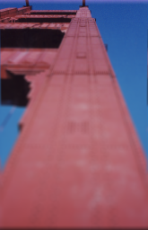
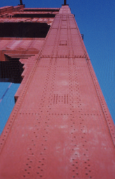
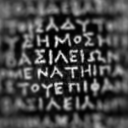

For the latest deconvolution results, click here. For the latest deconvolution results, click here.
Spatially Variant PSF Deconvolution
Some forms of blur cannot be described by a single PSF across the whole image. These types of blur include optical aberrations such as spherical aberrations and images showing variable focus levels in the same picture (e.g. close objects blurred, distant objects in focus or vice versa)
Restoring these images reqiures deconvolution that can handle a separate PSF at every point in the image. Unfortunatley, very few software solutions allow this. Even those programs that claim to allow 'spatially variant PSF' deconvolution seem to fall short of true spatial variance in that they only allow the PSF to change from one region to another - within any given region the PSF must be constant. This is a severe limitation when dealing in real world situations where the PSF gradually and smoothly changes across the whole field or even radically changes within a small space (such as atmospheric turbulence blur).
The Biaram programs ConvolVP and DeconVP are free of such limitations in that they allow spatially variant convolution and deconvolution with a completely separate PSF allowed for each and every pixel position in the input image. These PSFs need not be related and may be completely independent. Thus this is a truly spatially variant PSF implementation.
One limitation of this powerful implementation, however, is that the running of these programs reqires a lot of computer resources. A small image of 128x128 pixels, having 16384 pixels, requires you to supply upto 16384 separate PSF files. In the following examples I have used small test images that have been blurred in the computer (using ConvolVP) with sets of PSFs generated mathematically to simulate certain types of blur. These therefore serve as a test of the accuracy of the algorithms rather than a demonstration of their application to real-world situations (where the main burden of effort will be in generating the PSF set)
28.02.2008
| Golden gate bridge: (a) This image shows that the very top of the tower is in focus but as you come closer to the ground the picture becomes more and more out-of-focus as would occur with a camera lens of narrow focal depth. (b) Shows the result of spatially variant PSF deconvolution with a gradually changing focus PSF. This would not be possible with ordinary deconvolution. The PSF is just a plain disc in form which varies (linearly with distance) in diameter from a single pixel Dirac pulse at the top to 11 pixels radius at the bottom. (The result took 1024 Landweber iterations on each colour channel) |
a)  b)  |
| Rosetta 1: (a) An image of the Greek part of the Rosetta stone blurred to simulate spherical focus aberration. (b) Deconvolved with a spatially variant PSF which is a disc of diameter that increases towards the periphery of the field. The 'spherical aberrations' have been corrected. (The result took 4096 Landweber iterations) |
a)  b)  |
| Rosetta 2: (a) An image of the Greek part of the Rosetta stone blurred to simulate a different form of spherical distortion as seen through an imperfectly shaped lens. (b) Deconvolved with a spatially variant PSF which is a line whose length and orientation changes throughout the field. The distortion has been corrected with some edge artefacts at the extreme boundaries. (The result took 4096 Landweber iterations) |
a)  b) b)  |
|


 Dr P. J. Tadrous 2000-2026
Dr P. J. Tadrous 2000-2026